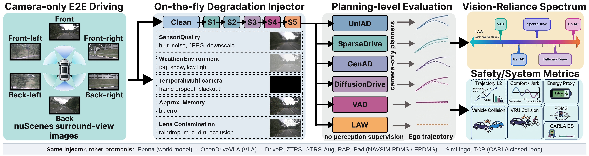
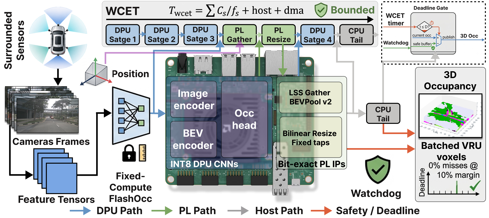

When Does Corruption Break the Plan? A Degradation-Tolerance Benchmark for Camera-Only End-to-End Driving.
IEEE/CVF Winter Conference on Applications of Computer Vision (WACV)


Publications
Explore our work in autonomous driving, robotics, cooperative perception, and transportation systems.
IEEE/CVF Winter Conference on Applications of Computer Vision (WACV)

IEEE/CVF Winter Conference on Applications of Computer Vision (WACV)

106th TRB Annual Meeting, Washington, DC
106th TRB Annual Meeting, Washington, DC
105th TRB Annual Meeting, Washington, DC
The open-access journal version, with an updated title and author list, was published in Communications in Transportation Research, 6(2), 9640030 (2026).
105th TRB Annual Meeting, Washington, DC
Communications in Transportation Research, 5, 100201
IET Intelligent Transport Systems, 19, e12577
No publications match your search. Try another keyword or year.